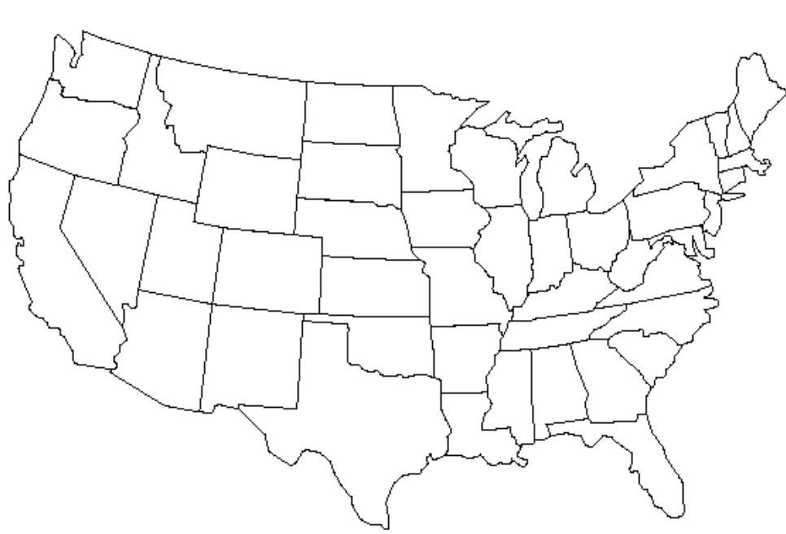

Consider the map of the United States in figure \ref{map}. You are challenged to color the map with the rule that bordering states cannot have the same color. Overall this is pretty easy, BUT we also want to use the fewest colors possible. How many colors do you need to do this?
Activity1.9.1.Color the map.
Color the map in the fewest colors possible, where neighboring states do not share a color.

Figure1.9.1.
Question1.9.2.How many colors?
So how many colors did it take to color your map?
Solution.
The minimum number of colors is \(4\text{.}\)
In this context, if we treat each state as a vertex and shared borders as edges, then this map is just a graph. The challenge we gave to color the map then is really a challenge to color a graph with this rule: if two vertices share an edge, those vertices must be different colors.
Finding the minimum colors to color a graph is a common graph theory question.
Subsection1.9.1Coloring Trees
A graph is called a tree if it is connected and has no cycles. More precisely, there is a path between any two vertices... but only one path.
Draw three of your own trees on at least \(10 \) vertices. How many colors do your new trees require?
Do you we know how many colors any tree will require now? Is it possible that all trees can be colored in two colors? Based on our examples, we want to say "yes", but a few examples is not enough to say for sure in the world of mathematics.
Maybe we can make a logical argument to show trees can be colored in two colors, though. Let’s start with a vertex (call it \(x\)) and color it \(1\text{.}\) Also, we say a vertex is a neighbor of \(x\) (or adjacent to \(x\)) if it shares an edges with \(x\text{.}\) Note that we often use numbers to represent colors so that we can easily refer to color 100, for example, instead of trying to keep up with 100 different named colors.
Question1.9.6.
What color can we color the neighbors of \(x\text{?}\)
Solution.
How about 2?
Question1.9.7.
What color can we color the neighbors of the neighbors of \(x\text{?}\)
Solution.
Since this new vertex is not adjacent to \(x\) (otherwise the graph is not a tree), it could be colored 1.
Question1.9.8.
What about the neighbors of the neighbors of the neighbors of \(x\text{?}\)
Solution.
This sounds confusing. Is it possible that one these neighbors of neighbors of neighbors
Okay, maybe we have found a pattern.
Question1.9.9.
What color can we color a vertex that is an odd number of edges away from \(x\text{?}\) what about a vertex an even number of edges from \(x\text{?}\)
This argument only works, though, because we’re talking about trees. If there is a cycle in our graph, then a vertex \(v \) may be an even number of edges from \(x\) coming from one direction and an odd number of edges from another direction. That can’t happen in a tree.
Awesome. So trees can be colored in two colors.
Subsection1.9.2What about Cycles?
So we know trees can be colored in two colors, and our argument really needed the fact the trees do not have cycles. So what about cycles? Can a cycle be colored in two colors?
Activity1.9.2.Coloring cycles.
Draw four cycles on \(n\) vertices for different values of \(n\) (I recommend consecutive values of \(n\)) and color their vertices.
Question1.9.10.
Give a hypothesis on the number of colors a cycle on \(n\) vertices requires to be colored.
Answer.
After observing several cycles, we conclude that if \(n\) is even, the cycle requires two colors. However, if \(n\) is odd, the cycle requires three colors.
Subsection1.9.3Appel and Haken shook things up
BORING!!! We’ll now turn our attention to something similar to coloring the map of the US. Is it possible to draw a country with states that would require more than four colors? The answer is actually no!
In 1976, Appel and Haken proved their famous Four Color Theorem, but this result brought a good bit of controversy. Numberphile’s fantastic video belows covers the controversy surrounding the Four Color Theorem.
Use the following video to answer the following questions.
Figure1.9.11.
Question1.9.12.
When phrasing the question in terms of graph theory. How do we represent countries?
Question1.9.13.
What is the benefit of phrasing the Four Color Theorem as a graph theory problem?
Question1.9.14.
Give a brief explanation of the argument that map needs no more than seven colors.
Question1.9.15.
Why was Appel and Haken’s proof controversial?
Quanta Magazine also has a great video covering the Four Color Theorem.